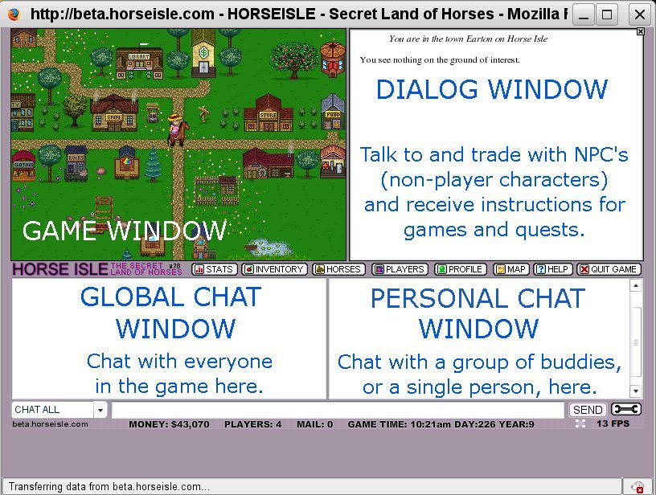
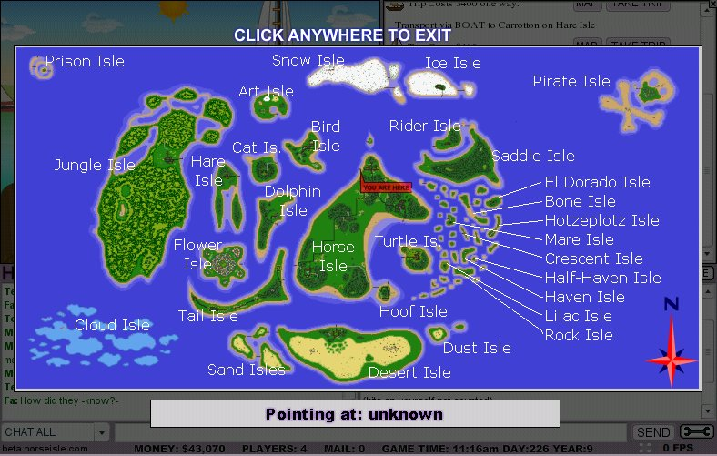

This is the screen in which you play the game. It has many interesting areas, all of which you should become familiar with.
The GAME WINDOW is where all the visual action takes place. You will always be in the center of this window.
The DIALOG WINDOW tells you where you are (In Earton on Horse Isle in this case), what is at the same spot you are on, and many other things as they come up.
Directly below these windows is the BUTTON PANEL. Clicking on any of these buttons gives you different information about various aspects of the game:
STATS gives you your personal statistics: how tired, hungry and thirsty you are, what you are wearing, what awards you have won, how many quests you have finished, and so on.
INVENTORY shows what you are carrying with you. Unless you have a ranch with a shed, you can carry 40 different kinds of items, and 50 items of each kind.
PLAYERS gives you some information on the other players who are playing at the same time you are. You can see who they are, find them on a map, look at the horses in their stable, and send them a private message. Players with single stars next to their names are monthly subscribers; double stars have subscribed for three months, and red-centered stars have subscribed for a year. Green stars with an M inside denote game Moderators (Mods), and red stars with an A are game Administrators (Admins).
PROFILE allows you to change your user icon and what you have written about yourself in your player profile.
MAP is a very interesting and extremely useful feature. The Map will always show you where you are on the isles. You can find the names of other places by holding the mouse cursor over the place whose name you want to know. At the bottom of this page is a map with most of the islands labelled.
HELP brings up a quick run-down of the game in the Dialog Window.
QUIT GAME saves all your settings and gets you out of the game cleanly. Always end a game by using the quit button to avoid losing any data!
The GLOBAL CHAT WINDOW will show chat from any game character, and whatever is in this window is seen by all players. It will also show you who has logged in and who has disconnected. The PERSONAL CHAT WINDOW shows chat that only your buddies, or a single person of your choice, can see. Below this is is the chat menu and type-in area. These will be discussed more thoroughly on the Chat page. This window also shows quest progress and in-game news, so watch it carefully as you play, even if you are not chatting.
To the right of the SEND button is the Wrench/Spanners icon for your TOOLKIT. The toolkit contains a binoculars, magnifying glass, rake and shovel, as well as a volume control for game background music, a "Low Detail" control (for eliminating some special effects when playing during peak hours, to make it run slightly faster), and buttons for clearing the chat windows.
Below all of this is the name of the server you are on, how much money you have on hand, how many players are online, how much mail you have waiting for you at City Hall and the current game time and date. Clicking the four white squares allows you to change the background melody to a random tune. The FPS number (Frames Per Second) is a measure of how fast the game is running on your computer. Twenty-four frames per second is as fast as it will go; anything higher than 20 is excellent speed.
